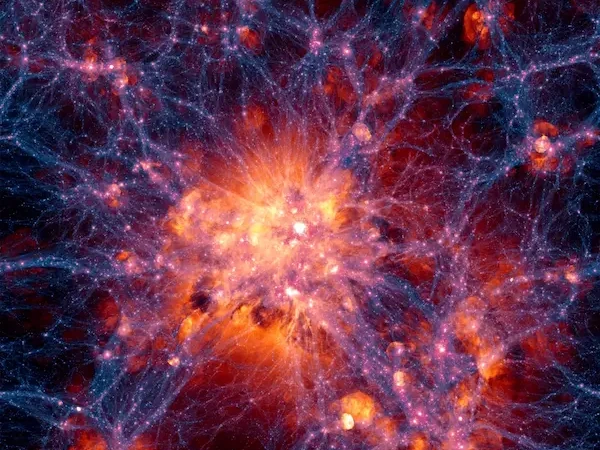
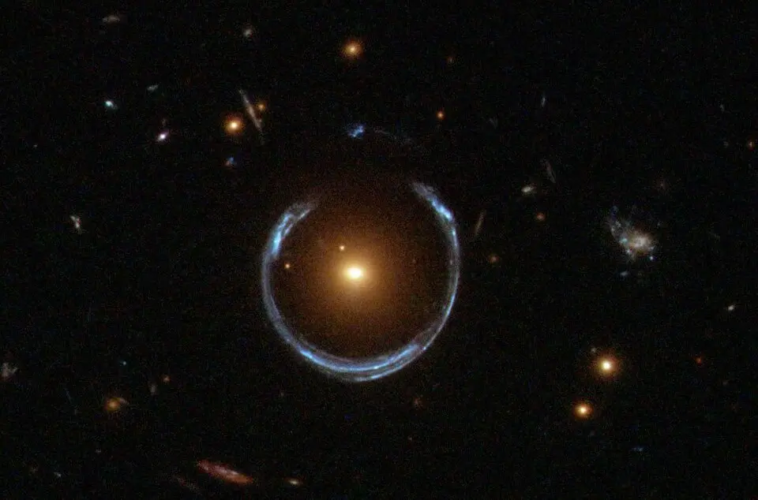

Dark Matter

Dark Matter Facts:
Ordinary matter only accounts for about 5% of the total mass in the universe. The rest is made up of dark matter (27%), and a mysterious repulsive force known as dark energy (68%)
It is called “dark” matter because it does not absorb, reflect, or emit any light, radio waves or X-rays. This makes in completely invisible to us. We only know it's there because of its effect.
The stars at the edges of rotating galaxies are orbiting their supermassive black hole center much faster than they would if the gravity were the only force holding them together. Without the presence of dark matter, spiral galaxies would tear apart.
Gravitational Lensing

Dark Matter Theories
Some theories suggest that dark matter is made up of undiscovered subatomic particles.
WIMPs: (Weakly Interacting Massive Particles) are theoretical particles that interact only through gravity and the weak nuclear force. They are completely invisible to light and electromagnetic radiation.
Axions: Theoretical extremely lightweight subatomic particles, billions of times lighter than an electron. They are thought to behave like waves rather than individual particles.